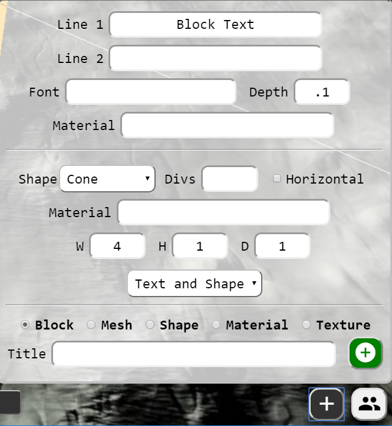
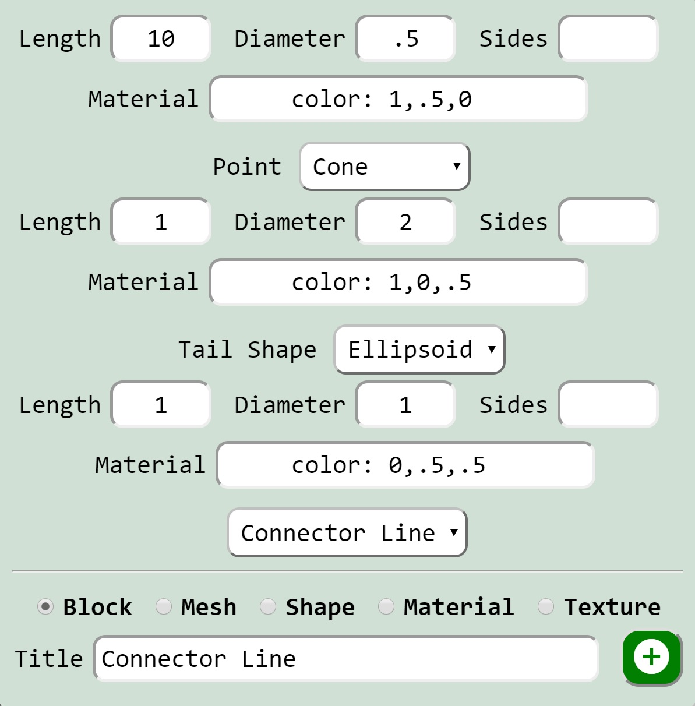
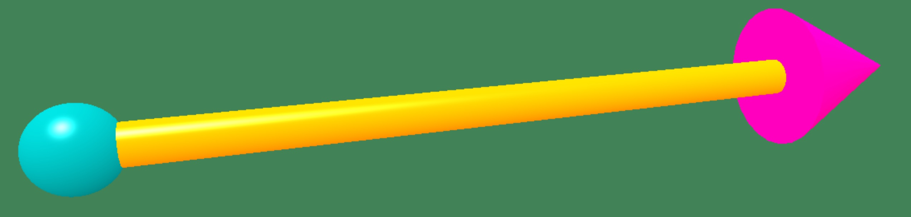
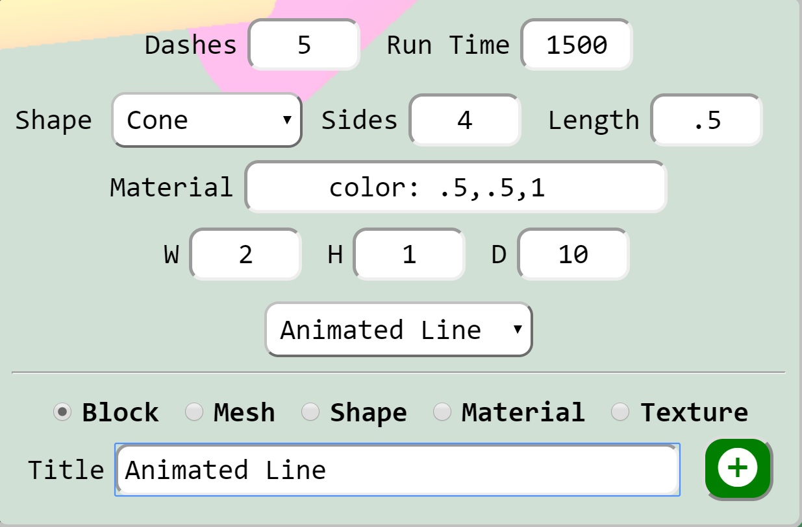
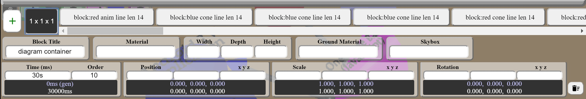
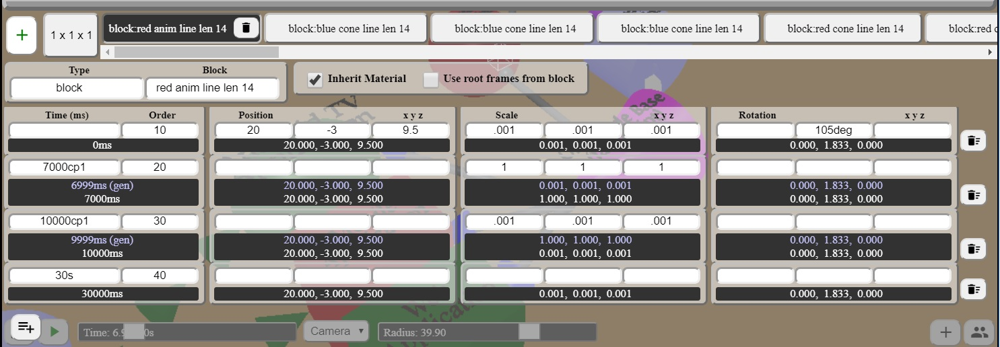
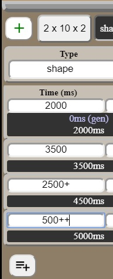

Disclaimer: This site is a tool for clients to collaborate with us (sceneblocks.com) to stage web gl content. Should you be using this for your own purposes outside the scope of our activities, we are not in anyway responsible for problems you encounter. Any
data contained in our databases is exclusively ours. While you are free to export and use videos and data from this site at this time, any and all copyrights are retained by sceneblocks.com.
This application is written using Firebase for the hosting and realtime data features.
Babylon.js is used for the WebGL functionality, and their documentation is the technical reference to the animation functionality. This application targets rapidly developing scenes for consumption by javascript
applications. Where features and functionality are quicker or easier to perform in code, they're left to be done there. That being said, for simple things like flowcharting and small animated videos this tool should do fine.
Babylonjs provides strong reference materials, here is short course on it's abilities.
Quick Tips
The default camera provided for scenes is the Arc Rotate camera. You can zoom in and out with the mouse wheel, or on touch enabled devices you can use gestures.
Hold down the right mouse button to move the camera target, and the left mouse button allows you to rotate around the target.
The default light provided is a hemispheric light, from (0.2, 0.8, 0.2). The intensity is adjustable - 1.0 is approximately sunlight. If you add a light to a block (or any child block), the default light is disabled.
Blocks also function as scenes, and a skybox and ground can be added to a block. The skybox doesn't show if the block is being used as a child block.
A few shortcuts have been added to accelerate prototyping.
For materials, to specify a material that is just an rgb (0-1 levels) color, use the format "color:r,g,b" - i.e. "color:1,0,0" is red.
For textures, there is an image library available using the prefix "sb: 123.jpg".
For meshes, there is an babylon file library available using the prefix "sb: mesh.babylon".
The idea of these files is to provide a number of usable images and meshes for quick consumption in your scene. You can always upload the pictures and meshes you
need as your project matures.
3D Block Diagrams
There are 3 add helpers for quickly building diagrams.
Text and Shape

This block creation helper combines 1 or 2 lines of text to make a shape combined with text. This is intended to replace a 2D square or circle containing text. It's not a good idea to have too many characters in one animation - as the poly count can get
high fast.
For the materials, you can either use a material you have created, or you can use "color: 1,1,1" notation to specify a color as the material.
For the shape, pick one of the presets, size it and the text and shape will be generated and placed into a box. The shape will be positioned on the negative Z axis, centered on Y and X. The text will be placed on the positive Z axis.
Connector Line


This block creation helper combines 3 shapes into a block to form a connector line. A cylinder shape is used for the line - if you don't want it round, specify the number of div (min 3), i.e. 4 makes a box instead of a cylinder.
Animated Line

This block creation helper combines shapes into a container block and adds frames. To make the dashes move faster, decrease the Run Time, or increase the D (Depth) of the line. Use these in place of dashed lines or to show flow.
Blocks
The concept of a block is to be a virtual lego block - with a specified size such as 2x4 or 1x8, etc. Then a scene and animation is built from a collection of blocks.
Blocks are containers holding members in the form of meshes, shapes and other blocks. Blocks are rendered as a box mesh containing all of the child elements. The isVisible of the box is set to false, leaving the child elements visible, but not
the block wrapper. Scaling, position and rotation are fully animatable features of a block - not color, visibility though. While materials can be applied to an entire block, animating the materials is not possible.
The block root contains frames, when it's a child you can choose either to these frames, or override (default) them with new ones.
... to add - inherit material, follow camera example, skybox and ground, block dimensions
Meshes and Shapes
Meshes can be difficult to export from blender and import. If you see red lines in the console (from images missing) - these textures can be removed by
opening the .babylon file and removing them. Just empty the path and leave "". Try to keep the mesh in one piece, otherwise once imported you'll have to wrap it in a
block to size it, etc and lose some of the native abilities. Try to delete as many other objects out of the blender scene as possible, so only the mesh is left. The
import routine grabs the first mesh it finds coming in from the .babylon file (scene).
Once a mesh is loaded, use the [Fit] button to size it so you can see it, by default this will place the mesh in 1x1x1 box and you can size it from there.
Frames
Animation Length
The outer most block controls the animation length, all internal blocks will repeat. So for a 30s animation, the root block should have at least one frame with a time of 30s.

The application generates a first frame here, and the last frame is 30s as specified by the time.
Clone Previous Frame
The example below shows the use of the cp operator for time. Also times by default are in ms, but 20s = 20000, m also works for minutes.
The cp (clone previous) operator clones the previous frame and sets the time (in this case 1 ms before). This creates an instant
transition without coding the duplicate frame (it's just save you the time of entering 2 frames instead of one). As you can see from the data
below the data 2 rows results - the blue one is from the cp operator.

Relative + and ++ operators

The + prefix operator adds the value to the first frame value to determine the current frame value.
The ++ operator adds the value to the previous frame.
The example at the left shows 2000 starting time, the 2nd frame has an absolute time (3.5s). The third
frame adds 2500 to the first frame time to get 4500 - and the last frame adds 500 to the previous frame for 5000.
Materials and Textures
Babylonjs has an overview of materials and textures for reference: here.
Bump Textures
Bump textures (aka normal maps) allow the gpu to render more light effects from a rough surface, without adding to the poly count.
Babylon has a little more reference: here.
Video Textures
Cameras and Lights
Babylonjs has an overview of cameras for reference: here. The follow camera
is the one that is automated to track a position, the other cameras can be animated - but only their position and rotation, not their aim point.
If you're looking to follow a point, use a follow camera and point it at an empty block, then animate that block.
Follow Camera
and finally...
Don't let this system limit you - it's intended to compliment babylonjs, not constrain it. For more interesting samples of what
babylon can do, refer to these.